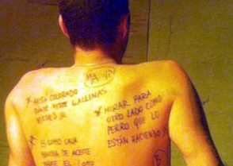

Di: Mónica Mateos-Vega
Fonte: Cubarte


El encuentro nació hace más de un lustro en apoyo al Festival Internacional de Poesía de La Habana, Cuba. La idea original era difundir ese acto y organizar lecturas con poetas que no pudieran asistir a la isla.
De manera paulatina, el entusiasmo de los participantes logró cosas “insólitas”, afirman los organizadores: lecturas de poesía en una cárcel, en parques, plantaciones, envío de poemas por Internet, por celular, lecturas en hospitales, escuelas, coloquios en universidades, lecturas en la montaña, en idiomas nativos, en autobuses. Cientos de poetas apostando por la palabra, la paz, vita.
“La meta es cubrir todos los espacios para leer y hacer poesía”, señala Tito Alvarado, poeta, saggista, giornalista, conferencista, promotore culturale, “organizador de sueños posibles y, soprattutto, defensor de causas perdidas”, como lo reconocen sus colegas.
Más de dos mil actividades
Con el apoyo, en un principio, del también poeta y periodista argentino Gabriel Impaglione, Alvarado, quien es presidente del Proyecto Cultural SUR, consiguió multiplicar las voces participantes y las miradas espectadoras del Festival Internacional de Poesía: Parola nel mondo.
Este año, della 10 per il 22 maggio, el encuentro “avanza en cantidad, calidad y en lugares donde se realizarán las acciones, las cuales serán más de 2 mil. Enfrentamos esta sexta edición con mayor confianza en que la poesía es mucho más que palabras, en que sí puede movilizar la conciencia, el canto, la voluntad, para hacer de la Tierra un planeta donde las guerras sean algo imposible”, añade en entrevista con La Jornada.
Detalla que la próxima primavera se logrará un encuentro “en verdad internacional, pero que no tiene la repercusión o la bombástica de otros festivales. Nuestro efecto es más silencioso, va acumulando energía para otros saltos de calidad, va abriendo una senda tan amplia como las necesidades y potencialidades humanas. Pensamos en la décima edición: 60 países, più di 3 mil acciones, con casi 30 mil poetas leyendo sus creaciones a un público extraordinario, que comienza el tránsito de espectador a actor de su propio destino”.
La Habana será la sede principal del cierre del Festival Internacional de Poesía: Parola nel mondo, así como de la apertura del Festival Internacional de Poesía de La Habana, que este año acoge al quinto Congreso del Proyecto Cultural SUR, “organización de creadores que es el alma de la fiesta, aquello que nadie ve, pero ahí está haciendo posible lo imposible”, reitera Alvarado.
Convocar un público
Al estar todos los organizadores del festival repartidos en el mundo, no hay un acto central; “es más, creemos que la descentralización y la horizontalidad son dos de los grandes méritos de este encuentro. Tampoco podemos hablar de simultaneidad en sentido estricto, pues los distintos husos horarios no lo permiten. En cada lugar que se asume a realizar una parte del festival, la clave de solución social será el ser humano en su dimensión de creador, en su aspiración de pleno desarrollo de su potencial”.
Durante estos cinco años, continúa, «para mí ha sido inolvidable la relación de confianza y empuje que se ha logrado, la comezón de las semanas previas al festival y la grata sensación posfestival, al ver mejores resultados que los esperados. Esto da enorme confianza en el ser humano y, ahora que el mundo camina hacia el abismo, la confianza debe ser restaurada para que sea el motor de los cambios.
«No hablo de la ingenuidad, como por ejemplo, poner dinero en un banco para que lo usen otros, o dar apoyo a los mismos, que cada día nos joden con soluciones para ellos, postergando estas para los que sí las necesitan ahora.
“«Hablo de una confianza que es un sello de conducta, de la fuerza de saber que hay alguien, que son miles y cientos de miles y serán cientos de millones, que han dado su palabra y la cumplen. Este hecho te deja en el éxtasis de haber tocado el cielo con la mano».
Tito Alvarado comparte que el primer milagro que ha ocurrido bajo el cobijo de la poesía «es que hay una fuerza y capacidad que se suma. Todos actuamos sin afán de micrófono, lo cual habla de la salud mental de los poetas; el segundo milagro es que, casi de la nada, coinciden locos, que son a la vez poetas y médicos, en una idea, y logran ponerla en marcha.
«El primer festival se llamó solamente Palabra en el Mundo y no fueron más de 30 letture. Ahora los organizadores somos varios cientos. El tercer milagro es que continúa creciendo y continuamos sumando capacidades para volver posible lo que aparece como imposible. Esos milagros nos conducen a una magia: la que el festival deja en quienes participan y que es una enorme tranquilidad de espíritu, así como la certeza de que sin poesía no hay cambio posible.
“Tuttavia, estamos conscientes de que la mayor magia que buscamos, la paz como una forma de vida con justicia social y en armonía con la naturaleza, está aún lejos, y por lo mismo más debemos esforzarnos para que estas metas de humana urgencia se cumplan en el más breve plazo».
Poetas en vivo
Cualquier persona se puede sumar al Festival Internacional de Poesía: Palabra en el Mundo organizando una o varias lecturas de poesía.
Las actividades pueden ser en cualquier escenario imaginable. “Lo central es que sean con poetas en vivo y que se logre convocar un público, si es con otras artes mejor; si el público son 20 personas y cinco los poetas, bien; si son más, mucho mejor”, concluye Tito Alvarado.
Más información en el blog: http://palabraenelmundo.blogspot.com/